हम इस पृथ्वी पर सूक्ष्म जीवाणुओं और बैक्टीरिया, जोंक से लेकर वटवृक्ष, हाथी और ब्लू व्हेल तक करोड़ों दूसरे जीवधारियों के साथ मिलकर एक समृद्ध सह-अस्तित्व साझा करते हैं। यह संपूर्ण आवास जिस पर हम रहते हैं, अत्यधिक जैव विविधता (Biodiversity) से भरा हुआ है। मानव और अन्य सभी जीव मिलकर एक जटिल पारिस्थितिकी तंत्र (Ecosystem) का निर्माण करते हैं, जिसमें हम अपनी हर आवश्यकता के लिए पूरी तरह निर्भर रहते हैं।
• वायु, जल और मृदा का पुनर्सृजन: पौधे, पशु और सूक्ष्मजीव मिलकर वायु की गुणवत्ता, स्वच्छ जल तथा भोजन उत्पन्न करने वाली मृदा का पुनर्सृजन करते हैं।
• प्राथमिक उत्पादक: वन (Forests) पारिस्थितिकी तंत्र के मुख्य प्राथमिक उत्पादक हैं, जिन पर बाकी सभी जीव (द्वितीयक व तृतीयक उपभोक्ता) पूरी तरह आश्रित रहते हैं।
भारत विश्व के सबसे समृद्ध जैव विविधता वाले देशों में से एक है। NCERT पाठ्यपुस्तक के अनुसार भारत में महत्वपूर्ण आंकड़े निम्नलिखित हैं:
- जैव उपजातियां: भारत में विश्व की कुल जैव उपजातियों (Sub-species) की लगभग 8 प्रतिशत संख्या (लगभग 16 लाख) पाई जाती है।
- वनस्पतिजात (Flora): भारत में लगभग 47,000 पादप प्रजातियां विद्यमान हैं, जो विश्व की कुल वनस्पति का लगभग 10% है। इनमें से 15,000 प्रजातियां फूल वाले पौधों की हैं जो स्थानिक (Endemic) हैं।
- प्राणीजात (Fauna): भारत में 81,000 से अधिक वन्यजीव प्रजातियां, 2,000 से अधिक पक्षी प्रजातियां (विश्व का 13%), तथा 2,546 मत्स्य प्रजातियां (विश्व का 12%) पाई जाती हैं।
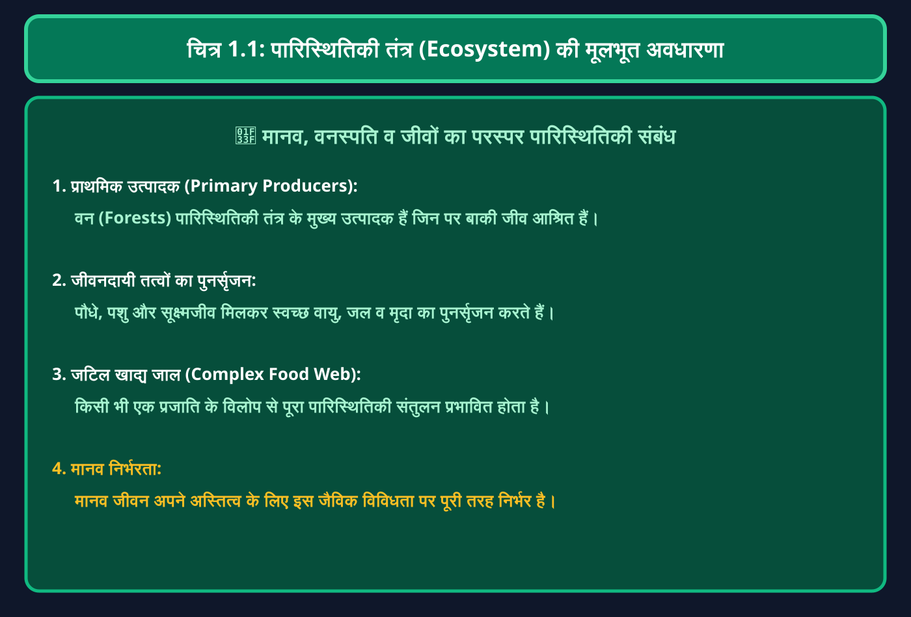
• वनस्पतिजात (Flora), प्राणीजात (Fauna) तथा मानव के बीच परस्पर निर्भरता और खाद्य जाल (Food Web) का पारिस्थितिकी मॉडल।
• वायु, जल और मृदा का पुनर्सृजन करने में वन प्राथमिक उत्पादक (Primary Producers) की भूमिका निभाते हैं। किसी भी एक प्रजाति के विलोप से संपूर्ण पारिस्थितिकी संतुलन प्रभावित होता है।
• भारत के पश्चिमी घाट (Western Ghats) का सघन सदाबहार वर्षावन क्षेत्र, जहाँ सघन वन कैनोपी (Canopy) और समृद्ध जैव विविधता पाई जाती है।
• इस क्षेत्र में 15,000 से अधिक स्थानिक (Endemic) पादप प्रजातियां और दुर्लभ वन्यजीव निवास करते हैं।
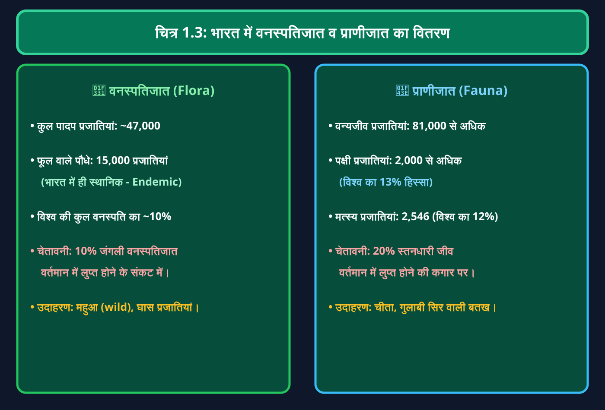
• भारत में वनस्पतिजात (47,000 पादप प्रजातियां) एवं प्राणीजात (81,000 से अधिक वन्यजीव प्रजातियां) का वितरण आंकड़ों द्वारा तुलनात्मक निरूपण।
• भारत में अनुमानतः 10 प्रतिशत वन्य वनस्पतिजात और 20 प्रतिशत स्तनधारियों के लुप्त होने का गंभीर संकट बना हुआ है।
अंतर्राष्ट्रीय प्राकृतिक संरक्षण और प्राकृतिक संसाधन संरक्षण संघ (IUCN) के अनुसार पौधों और प्राणियों की जातियों को निम्नलिखित 6 मुख्य श्रेणियों में विभाजित किया गया है:
- सामान्य प्रजातियां (Normal Species): जिनकी संख्या जीवित रहने के लिए सामान्य मानी जाती है। उदाहरण: मवेशी, साल, चीड़, कृंतक (Rodents)।
- संकटग्रस्त प्रजातियां (Endangered Species): जिनके लुप्त होने का गंभीर खतरा है और यदि विपरीत परिस्थितियां बनी रहीं तो इनका जीवित रहना कठिन होगा। उदाहरण: काला हिरण, मगरमच्छ, भारतीय जंगली गधा, एक-सींग वाला गेंडा, शेर की पूंछ वाला मकाक, संगाई (मणिपुरी हिरण)।
- सुभेद्य प्रजातियां (Vulnerable Species): जिनकी संख्या लगातार घट रही है और यदि ध्यान नहीं दिया गया तो ये संकटग्रस्त श्रेणी में शामिल हो जाएंगी। उदाहरण: नीली भेड़, एशियाई हाथी, गंगा नदी की डॉल्फिन।
- दुर्लभ प्रजातियां (Rare Species): जिनकी संख्या बहुत कम या विषम परिस्थितियों में सुभेद्य श्रेणी में आ सकती है। उदाहरण: हिमालयी भूरा भालू, जंगली एशियाई भैंसा, रेगिस्तानी लोमड़ी।
- स्थानिक प्रजातियां (Endemic Species): जो प्राकृतिक या भौगोलिक सीमाओं के विशिष्ट क्षेत्रों में ही पाई जाती हैं। उदाहरण: अंडमानी तीतर, निकोबारी कबूतर, अंडमानी जंगली सूअर, अरुणाचल का मिथुन।
- लुप्त प्रजातियां (Extinct Species): जो इनके रहने के आवासों में खोजने पर पूरी तरह अनुपस्थित पाई गईं। उदाहरण: एशियाई चीता (1952 में भारत में लुप्त घोषित), गुलाबी सिर वाली बतख।
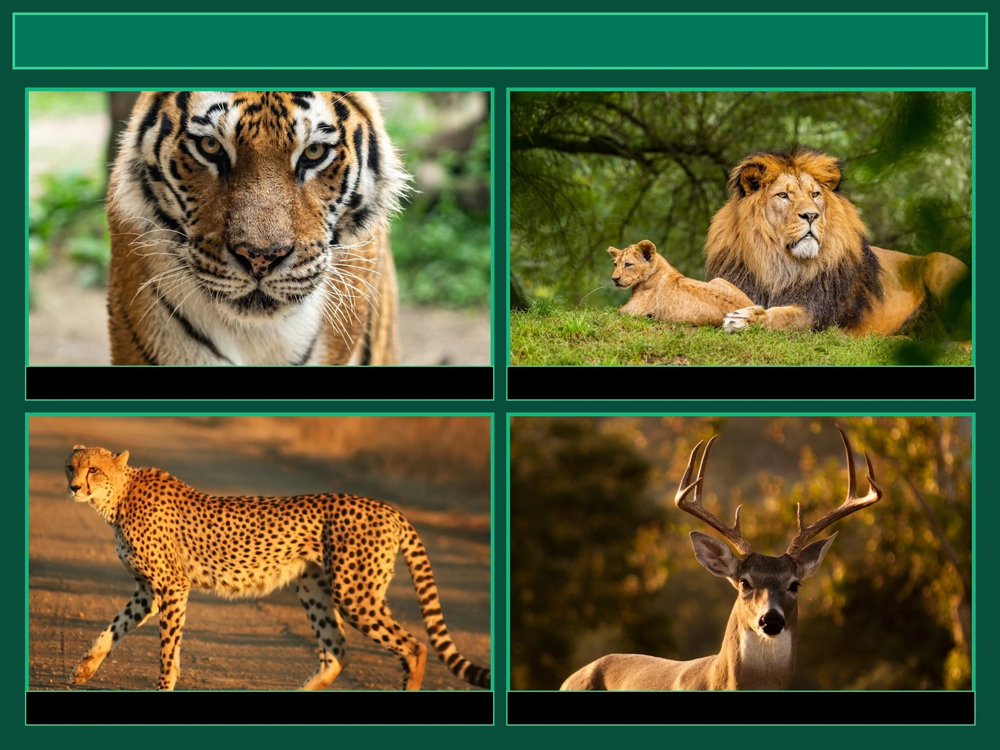
• भारत की 4 मुख्य संकटापन्न वन्यजीव प्रजातियां:
1. एशियाई बाघ (Asiatic Tiger): सुंदरवन व कॉर्बेट राष्ट्रीय उद्यान का मुख्य संकटग्रस्त जीव।
2. एक-सींग वाला गेंडा (One-horned Rhino): काजीरंगा (असम) का मुख्य रक्षित संकटग्रस्त प्राणी।
3. एशियाई चीता (Cheetah): 1952 में लुप्त घोषित तथा 2022 में कुनो राष्ट्रीय उद्यान (म.प्र.) में पुनर्वासित चीता।
4. काला हिरण (Blackbuck): राजस्थान के बिश्नोई समुदाय द्वारा रक्षित संकटग्रस्त हिरण।
• इन चारों जीवों को 1972 के भारतीय वन्यजीव (संरक्षण) अधिनियम की अनुसूची-1 के तहत सर्वोच्च राष्ट्रीय संरक्षण प्राप्त है।
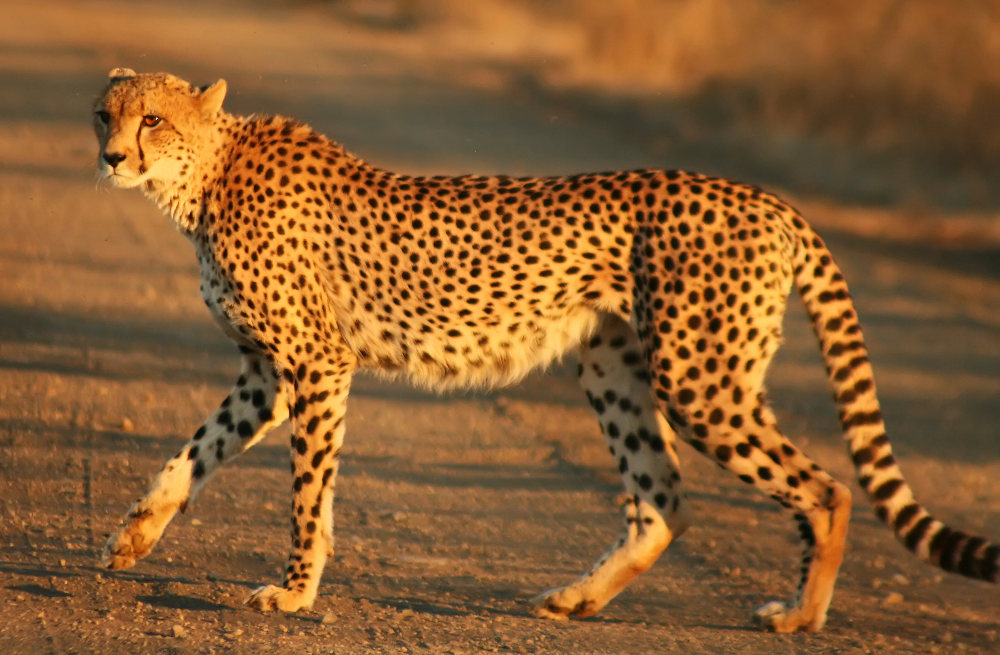
• एशियाई चीता (Acinonyx jubatus) 112 किमी/घंटे की गति से दौड़ने वाला विश्व का सबसे तेज़ स्तनधारी जीव है, जिसे भारत में 1952 में लुप्त (Extinct) घोषित किया गया था।
• भारत से लुप्त होने के 70 साल बाद सितंबर 2022 में प्रोजेक्ट चीता के तहत नामीबिया एवं दक्षिण अफ्रीका से चीतों को लाकर मध्य प्रदेश के कुनो राष्ट्रीय उद्यान (Kuno National Park, M.P.) में बसाया गया है।
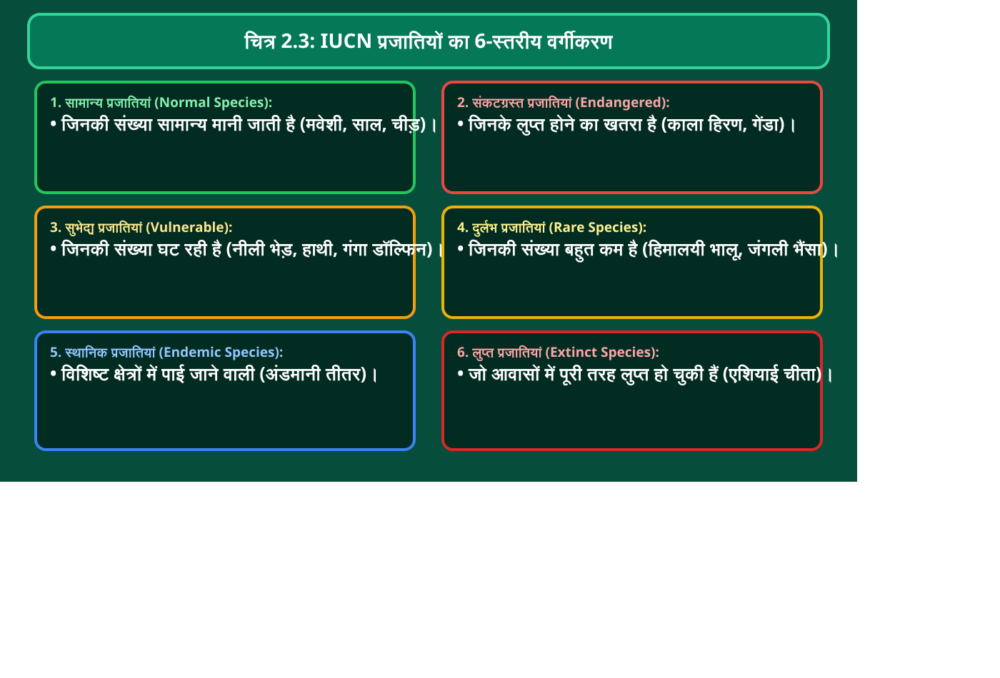
• अंतर्राष्ट्रीय प्राकृतिक संरक्षण संघ (IUCN) द्वारा प्रजातियों का 6-स्तरीय वर्गीकरण:
1. सामान्य प्रजातियां, 2. संकटग्रस्त प्रजातियां, 3. सुभेद्य प्रजातियां, 4. दुर्लभ प्रजातियां, 5. स्थानिक प्रजातियां, 6. लुप्त प्रजातियां।
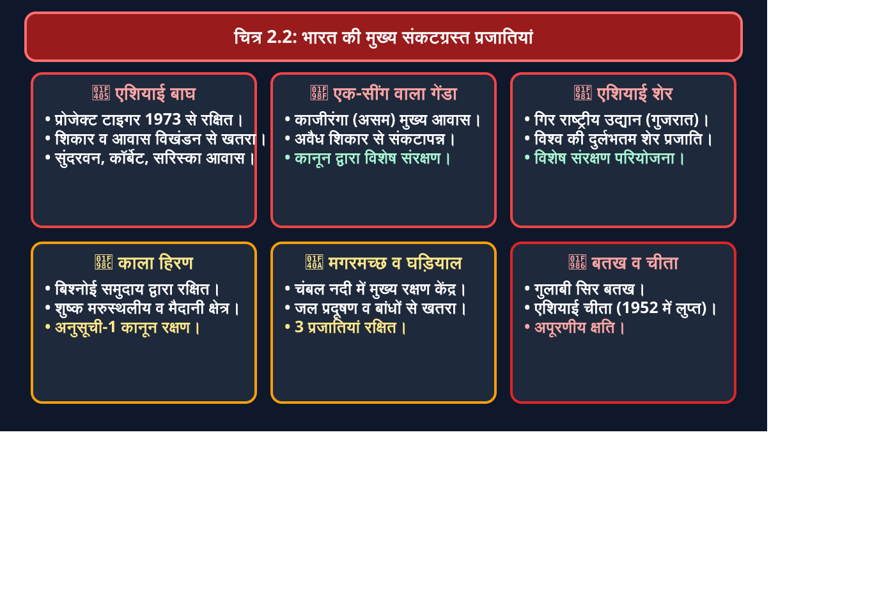
• भारत की 6 प्रमुख संकटग्रस्त प्रजातियां: एशियाई बाघ, एक-सींग वाला गेंडा, गिर शेर, काला हिरण, घड़ियाल तथा संगाई (मणिपुरी हिरण)।
• इन सभी जीवों को भारतीय वन्यजीव संरक्षण कानून के तहत कानूनी सुरक्षा प्राप्त है।
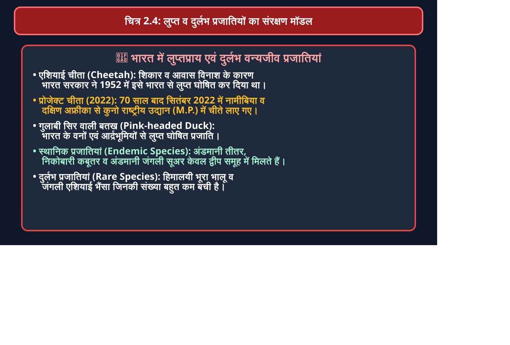
• एशियाई चीता (लुप्त), गुलाबी सिर वाली बतख (लुप्त), निकोबारी कबूतर (स्थानिक) तथा हिमालयी भूरा भालू (दुर्लभ) का भौगोलिक एवं संरक्षण विवरण।
मानव ने अपने स्वार्थ, आवास, ईंधन, इमारती लकड़ी और बड़े विकास कार्यों के लिए प्राकृतिक वनों को भारी नुकसान पहुँचाया है। NCERT पाठ्यपुस्तक के अनुसार वनों के ह्रास के 4 मुख्य कारक निम्नलिखित हैं:
1. कृषि का विस्तार (Agricultural Expansion):
स्वतंत्रता के बाद भारत में कृषि भूमि का तेजी से विस्तार हुआ। फॉरेस्ट सर्वे ऑफ इंडिया (NCERT आंकड़ों) के अनुसार 1951 और 1980 के बीच 26,200 वर्ग किलोमीटर से अधिक वन क्षेत्र को कृषि भूमि में बदला गया। पूर्वोत्तर भारत और मध्य भारत में झूम खेती / स्थानांतरित कृषि (Slash and Burn Agriculture) के कारण वनों का भारी ह्रास हुआ है।
2. बड़ी विकास परियोजनाएं (River Valley Projects):
1952 से अब तक नदी घाटी परियोजनाओं के कारण 5,000 वर्ग किलोमीटर से अधिक वन क्षेत्र साफ किए जा चुके हैं। मध्य प्रदेश में नर्मदा सागर परियोजना के पूर्ण होने से 40,000 हेक्टेयर से अधिक सघन वन क्षेत्र जलमग्न होने की कगार पर है।
3. खनन कार्य (Mining Operations):
खनन वनों के विनाश का एक बड़ा कारण है। पश्चिम बंगाल में स्थित बक्सा टाइगर रिजर्व (Buxa Tiger Reserve) डोलोमाइट (Dolomite) के खनन के कारण गंभीर खतरे में है। इसने एशियाई हाथियों के प्राकृतिक आवागमन मार्ग (Elephant Corridors) को बाधित और विखंडित कर दिया है।
4. अति-पशुचारण एवं ईंधन लकड़ी संग्रह:
ईंधन के लिए लकड़ियों की कटाई और अनियंत्रित पशुचारण से वनों पर भारी दबाव पड़ा है। इसके अलावा औद्योगिकीकरण, रेल लाइनों तथा एकल व्यापारिक वृक्षारोपण (Monoculture Plantation) जैसे सागौन व चीड़ के रोपण से दक्षिण भारत के प्राकृतिक वनों का भारी नुकसान हुआ है।
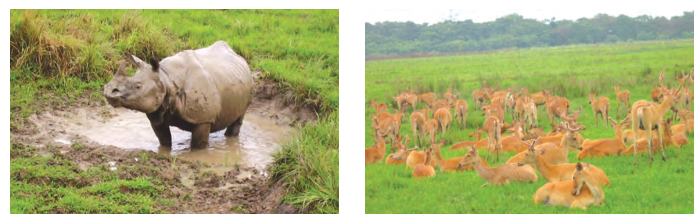
• 1951 से 1980 के बीच कृषि विस्तार के लिए 26,200 वर्ग किलोमीटर से अधिक वन क्षेत्र को कृषि भूमि में बदला गया।
• बक्सा टाइगर रिजर्व (पश्चिम बंगाल) डोलोमाइट खनन के कारण गंभीर खतरे में है, जिससे हाथियों के प्राकृतिक प्रवास मार्ग बाधित हुए हैं।
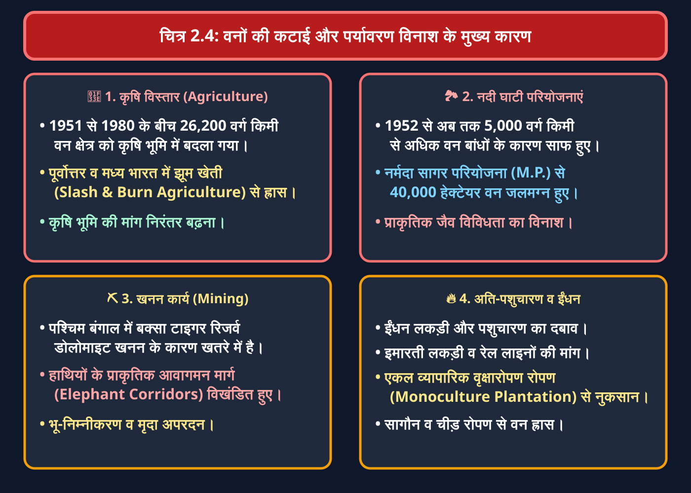
• 1. कृषि का विस्तार: 26,200 वर्ग किमी वन क्षेत्र का कृषि भूमि में परिवर्तन व झूम खेती।
• 2. नदी घाटी परियोजनाएं: 1952 से अब तक 5,000 वर्ग किमी वन क्षेत्र बांधों से जलमग्न।
• 3. खनन कार्य: बक्सा डोलोमाइट खनन से पारिस्थितिकी क्षति।
• 4. अति-पशुचारण व ईंधन: ईंधन लकड़ी संग्रह, औद्योगिकीकरण व सागौन/चीड़ रोपण।
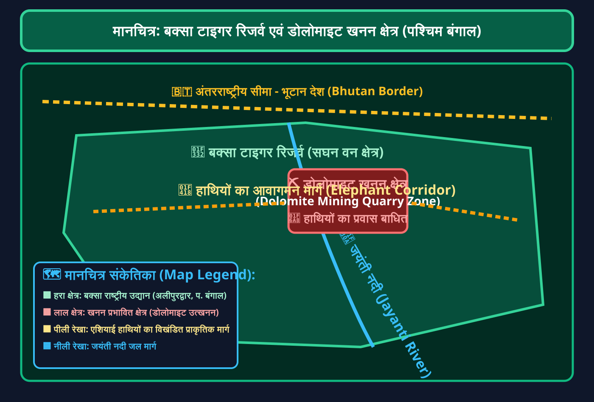
• पश्चिम बंगाल के अलीपुरद्वार जिले में स्थित बक्सा टाइगर रिजर्व (Buxa Tiger Reserve) तथा भूटान सीमा से सटे क्षेत्र का मानचित्र।
• पर्यावरण ह्रास तथ्य: जयंती क्षेत्र में डोलोमाइट (Dolomite) खनन गतिविधियों के कारण विशाल वन क्षेत्र नष्ट हुआ है, जिससे एशियाई हाथियों के प्राकृतिक प्रवास मार्ग (Elephant Corridors) गंभीर रूप से विखंडित हुए हैं।
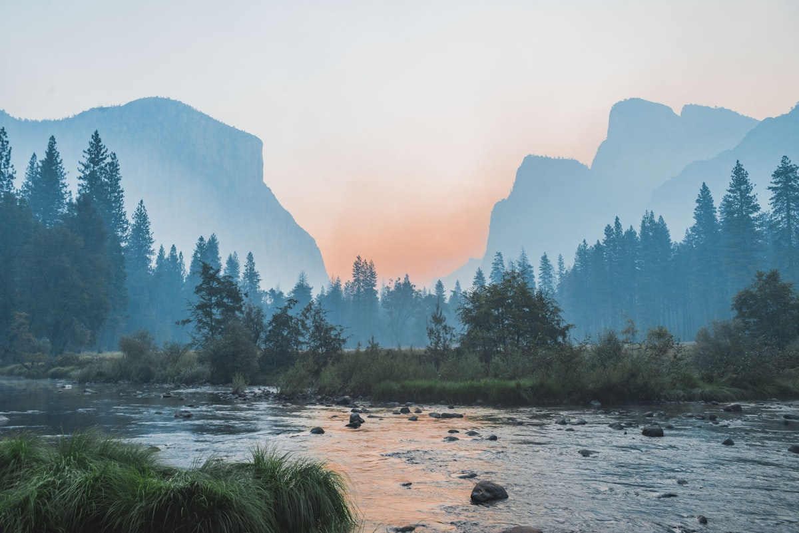
• नदी घाटी परियोजनाओं द्वारा वनों तथा प्राकृतिक आवासों के जलमग्न होने का दृश्य।
• मध्य प्रदेश में नर्मदा सागर परियोजना के कारण 40,000 हेक्टेयर सघन वन क्षेत्र जलमग्न होने की कगार पर है।
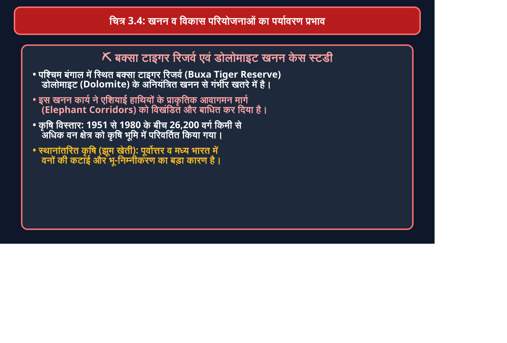
• खनन, भू-निम्नीकरण (Land Degradation) तथा वनों के विखंडन द्वारा स्थानीय पारिस्थितिकी संतुलन बिगड़ने का मॉडल।
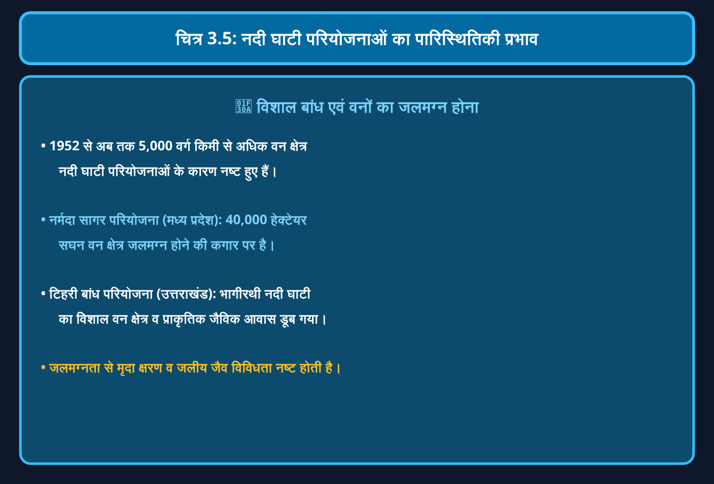
• विशाल बांध जलाशयों द्वारा सघन वनों का जलमग्न होना तथा मृदा अपरदन व जलीय जीवों के आवासों का विस्थापन।
भारत में वनों का प्रबंधन और संरक्षण प्रत्यक्ष रूप से सरकार के वन विभाग के अधीन है। प्रशासनिक दृष्टि से भारत के वनों को 3 श्रेणियों में विभाजित किया जाता है:
1. आरक्षित वन (Reserved Forests):
देश के कुल वन क्षेत्र के 50 प्रतिशत से अधिक भाग को आरक्षित वन घोषित किया गया है। संरक्षण की दृष्टि से इन्हें सर्वाधिक मूल्यवान माना जाता है। इनमें इमारती लकड़ी की कटाई, शिकार और पशुचारण पर पूरी तरह कानूनी प्रतिबंध होता है।
• मुख्य राज्य: जम्मू-कश्मीर, आंध्र प्रदेश, उत्तराखंड, केरल, तमिलनाडु, पश्चिम बंगाल और महाराष्ट्र।
2. संरक्षित वन (Protected Forests):
वन विभाग के अनुसार देश के कुल वन क्षेत्र का लगभग एक-तिहाई भाग (33%) संरक्षित वन है। इन वनों को और अधिक नष्ट होने से बचाने के लिए कानूनी सुरक्षा प्रदान की गई है। यहाँ नियमों के तहत स्थानीय लोगों को सूखी लकड़ी संग्रह व सीमित चराई की अनुमति होती है।
• मुख्य राज्य: बिहार, हरियाणा, पंजाब, हिमाचल प्रदेश, राजस्थान और ओडिशा।
3. अवर्गीकृत वन (Unclassed Forests):
अन्य सभी प्रकार के वन और बंजर भूमि जो सरकार, निजी व्यक्तियों और स्थानीय समुदायों के संयुक्त या निजी स्वामित्व में होते हैं, अवर्गीकृत वन कहलाते हैं।
• मुख्य राज्य: पूर्वोत्तर भारत के सभी राज्य और गुजरात में अधिकांश वन अवर्गीकृत हैं और स्थानीय समुदायों द्वारा स्वायत्त रूप से प्रबंधित हैं।
आरक्षित और संरक्षित वनों को मिलाकर स्थायी वन क्षेत्र कहा जाता है, जिनका रख-रखाव इमारती लकड़ी और अन्य वन पदार्थों की सुरक्षा के लिए किया जाता है। मध्य प्रदेश में कुल वन क्षेत्र का 75 प्रतिशत भाग स्थायी वनों के अंतर्गत आता है, जो देश में सर्वाधिक है।
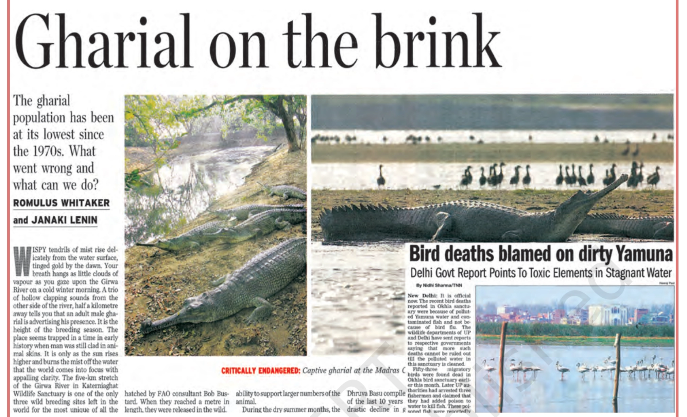
• 1. आरक्षित वन (Reserved Forests): 50% से अधिक हिस्सा, सर्वाधिक मूल्यवान व पूरी तरह रक्षित।
• 2. संरक्षित वन (Protected Forests): लगभग 33% हिस्सा, आगे नष्ट होने से सुरक्षा।
• 3. अवर्गीकृत वन (Unclassed Forests): सरकार व निजी समुदायों के संयुक्त स्वामित्व वाले वन।
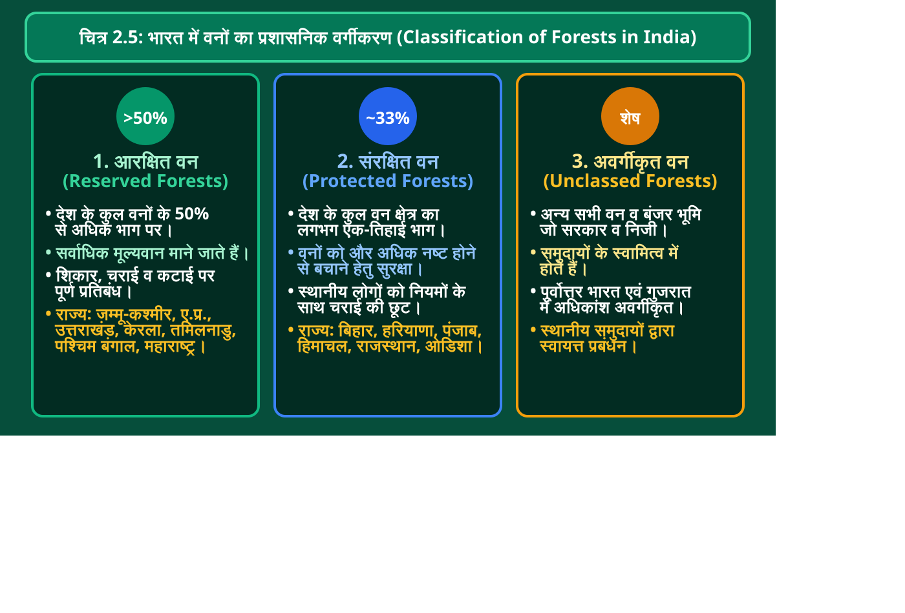
• आरक्षित वन (50% से अधिक), संरक्षित वन (33%) तथा अवर्गीकृत वनों का प्रशासनिक पाई-चार्ट विवरण।

• कान्हा राष्ट्रीय उद्यान (मध्य प्रदेश) का सघन आरक्षित सागौन (Teak) एवं साल वन क्षेत्र।
• मध्य प्रदेश में कुल वन क्षेत्र का 75 प्रतिशत भाग स्थायी वनों (आरक्षित व संरक्षित वनों) के अंतर्गत आता है जो देश में सर्वाधिक है।
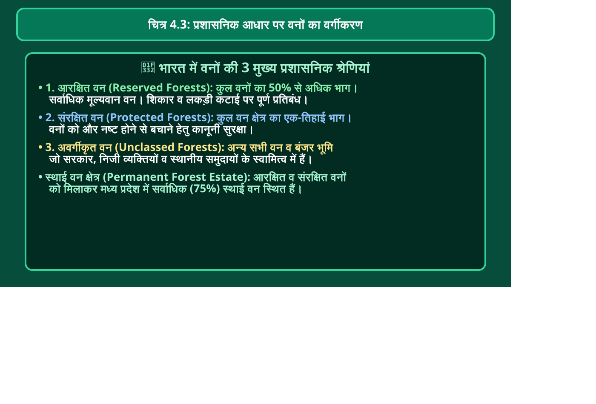
• भारतीय वन अधिनियम के तहत आरक्षित एवं संरक्षित वनों की कानूनी सीमाओं तथा सरकारी सुरक्षा तंत्र का निरूपण।
1960 और 1970 के दशकों के दौरान पर्यावरण संरक्षकों ने वन्यजीवों की सुरक्षा के लिए राष्ट्रीय मांग की। इसके परिणामस्वरूप सरकार ने कई महत्वपूर्ण कानून और परियोजनाएं लागू कीं:
वर्ष 1972 में भारतीय वन्यजीव (संरक्षण) अधिनियम (Wildlife Protection Act 1972) लागू किया गया, जिसमें वन्यजीवों के आवासों के रक्षण के अनेक प्रावधान थे। पूरे भारत में रक्षित जातियों की सूची प्रकाशित की गई, शिकार पर पूर्ण राष्ट्रीय प्रतिबंध लगाया गया, और राष्ट्रीय उद्यानों तथा वन्यजीव अभयारण्यों की स्थापना की गई।
बाघ पारिस्थितिकी तंत्र का एक मुख्य जीव है। 1973 में अधिकारियों ने पाया कि 20वीं सदी की शुरुआत में बाघों की अनुमानित संख्या 55,000 से घटकर केवल 1,827 रह गई थी। बाघों के शिकार और आवास विखंडन को रोकने के लिए 1973 में 'प्रोजेक्ट टाइगर' की शुरुआत की गई।
1. कॉर्बेट राष्ट्रीय उद्यान: उत्तराखंड (भारत का प्रथम राष्ट्रीय पार्क)
2. सुंदरवन राष्ट्रीय उद्यान: पश्चिम बंगाल (मैंग्रोव डेल्टा बाघ रक्षण)
3. बांधवगढ़ राष्ट्रीय उद्यान: मध्य प्रदेश
4. सरिस्का वन्यजीव अभयारण्य: राजस्थान (अलवर)
5. मानस बाघ रिजर्व: असम (गेंडा व बाघ रक्षण)
6. पेरियार बाघ रिजर्व: केरल (हाथी व बाघ रक्षण)
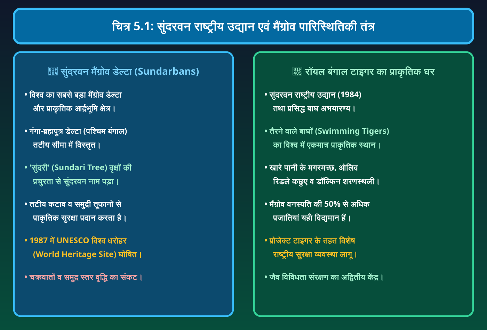
• पश्चिम बंगाल के गंगा-ब्रह्मपुत्र डेल्टा में स्थित सुंदरवन राष्ट्रीय उद्यान (UNESCO विश्व धरोहर स्थल) तथा रॉयल बंगाल टाइगर का प्राकृतिक आवास।
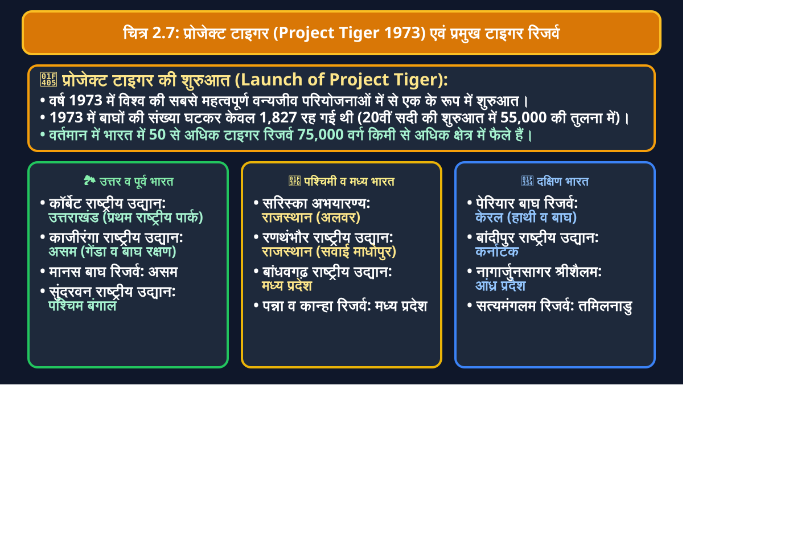
• भारत के प्रमुख बाघ अभयारण्य (Tiger Reserves): कॉर्बेट (उत्तराखंड), सुंदरवन (पश्चिम बंगाल), बांधवगढ़ (म.प्र.), सरिस्का (राजस्थान), काजीरंगा (असम) तथा पेरियार (केरल)।
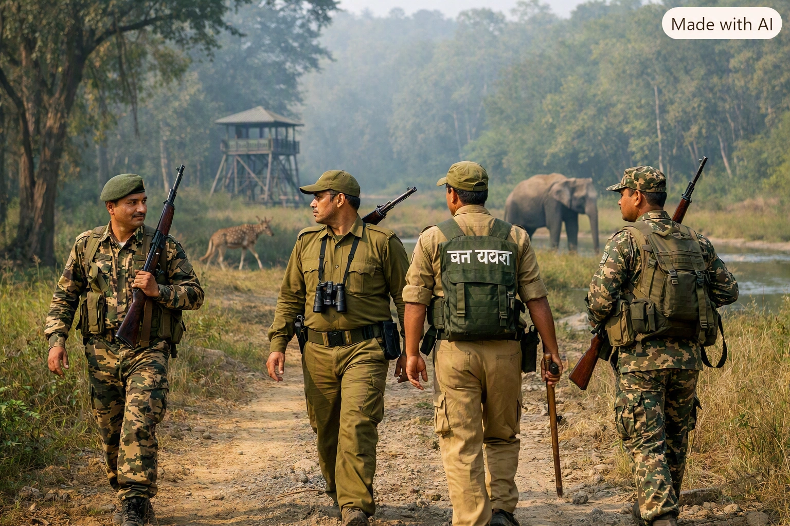
• भारतीय वन्यजीव (संरक्षण) अधिनियम 1972 के तहत राष्ट्रीय उद्यानों और अभयारण्यों में अवैध शिकार व कटाई रोकने के लिए गश्त लगाते वन विभाग के रेंजर एवं गॉर्ड।
• संरक्षण कानून तथ्य: 1972 में पूरे भारत में रक्षित प्रजातियों की राष्ट्रीय सूची प्रकाशित की गई, वन्यजीवों के शिकार पर पूर्ण राष्ट्रीय प्रतिबंध लगाया गया और राष्ट्रीय उद्यानों तथा अभयारण्यों को कानूनी सुरक्षा प्रदान की गई।

• पश्चिमी घाट (Western Ghats) की पर्वत शृंखलाएं, जो भारत का प्रमुख जैव विविधता हॉटस्पॉट और यूनेस्को प्राकृतिक विश्व धरोहर क्षेत्र है।
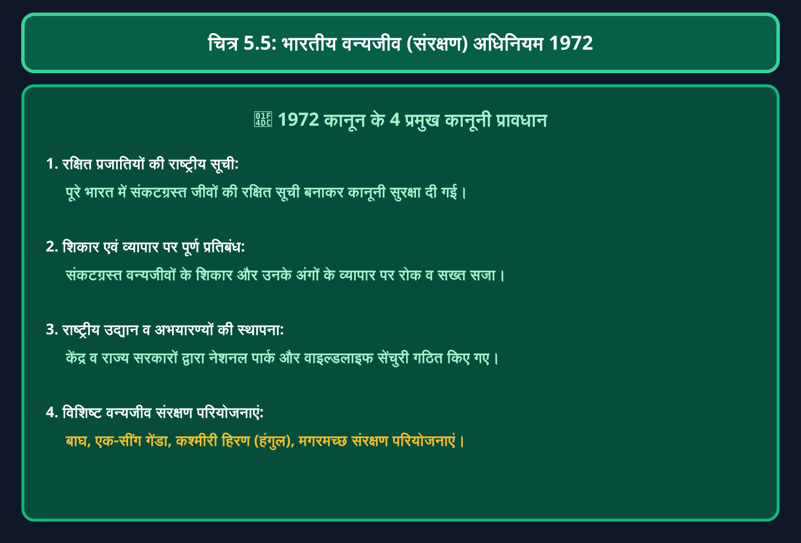
• 1. पूरे भारत में रक्षित जीवों की राष्ट्रीय सूची जारी कर कानूनी सुरक्षा प्रदान की गई।
• 2. संकटग्रस्त वन्यजीवों के शिकार और उनके अंगों के व्यापार पर पूर्ण प्रतिबंध व सख्त सजा।
• 3. राष्ट्रीय पार्क व वन्यजीव अभयारण्यों का कानूनी गठन व सीमांकन।
• 4. बाघ, गेंडा व मगरमच्छ जैसे विशिष्ट संकटग्रस्त जीवों हेतु विशेष राष्ट्रीय संरक्षण परियोजनाएं।
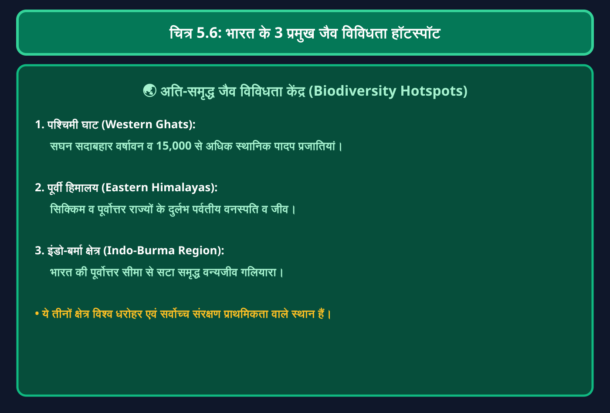
• 1. पश्चिमी घाट (Western Ghats), 2. पूर्वी हिमालय (Eastern Himalayas), 3. इंडो-बर्मा क्षेत्र (Indo-Burma Region)।
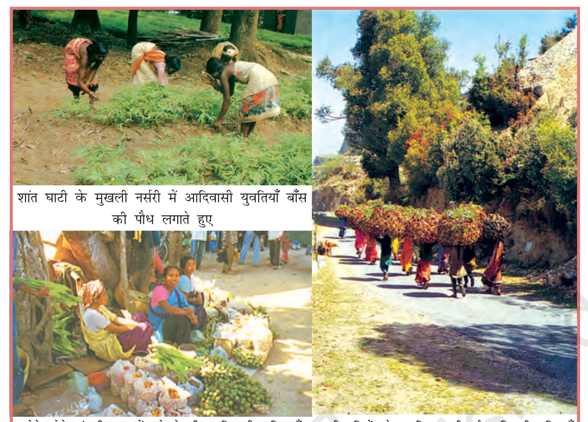
• भारत में पारंपरिक जनजातीय समुदाय सदियों से वनों के रक्षक रहे हैं। वे वनों से सूखी लकड़ियां, फल व औषधियां एकत्र कर सतत उपयोग का आदर्श प्रस्तुत करते हैं।
भारत में वन संरक्षण की नीतियां केवल सरकार तक सीमित नहीं हैं, बल्कि स्थानीय समुदायों ने सदियों से अपनी पारंपरिक तकनीकों से वनों का संरक्षण किया है:
1. चिपको आंदोलन (Chipko Movement):
उत्तराखंड के गढ़वाल हिमालय में 1970 में सुंदरलाल बहुगुणा, चंडी प्रसाद भट्ट तथा गौरा देवी के नेतृत्व में शुरू हुआ। ग्रामीणों और महिलाओं ने पेड़ों से चिपककर ठेकेदारों द्वारा व्यावसायिक कटाई को सफलतापूर्वक रोका। इसने दिखाया कि स्थानीय पौधों से पुनरोपण संभव है।
2. बिश्नोई समाज (राजस्थान):
राजस्थान में बिश्नोई समाज के गांवों के आसपास काले हिरण (Blackbuck), चिंकारा और मोर के झुंड देखे जा सकते हैं, जो समाज का अभिन्न अंग हैं और कोई भी इनका शिकार नहीं कर सकता। 1730 में अमृता देवी बिश्नोई के नेतृत्व में 363 लोगों ने खेजड़ी वृक्षों की रक्षा हेतु अपने प्राणों की आहुति दी थी।
3. भैरोदेव डाकव 'सोंचुरी' (अलवर, राजस्थान):
राजस्थान के अलवर जिले के 5 गांवों के लोगों ने 1,200 हेक्टेयर वन क्षेत्र को 'भैरोदेव डाकव सोंचुरी' घोषित किया है। इसके अपने नियम हैं, जो शिकार वर्जित करते हैं और बाहरी हस्तक्षेप से वन्यजीवों की रक्षा करते हैं।
4. बीज बचाओ आंदोलन (टिहरी) व नवधान्य:
टिहरी के 'बीज बचाओ आंदोलन' और वंदना शिवा के 'नवधान्य' आंदोलन ने दिखाया है कि रासायनिक उर्वरकों के बिना भी पारंपरिक बीजों से विविधतापूर्ण जैविक कृषि संभव और आर्थिक रूप से लाभदायक है।
5. संयुक्त वन प्रबंधन (JFM - Joint Forest Management):
औपचारिक रूप से 1988 में ओडिशा राज्य से शुरुआत हुई। इसमें क्षरित वनों के प्रबंधन और सुरक्षा के लिए ग्राम सुरक्षा समितियां (Village Forest Protection Committees) बनाई जाती हैं। बदले में ग्रामीणों को गैर-इमारती वन उत्पादों (NTFP) और इमारती लकड़ी में हिस्सेदारी मिलती है।
प्रकृति की पूजा एक प्राचीन जनजातीय विश्वास है। वनों के कुछ हिस्सों को अछूता छोड़कर देवी-देवताओं को समर्पित कर दिया जाता है। छोटानागपुर क्षेत्र में मुंडा और संताल जनजातियां महुआ और कदंब के पेड़ों की पूजा करती हैं, जबकि ओडिशा व बिहार की जनजातियां विवाह के अवसर पर इमली और आम के वृक्षों की पूजा करती हैं।
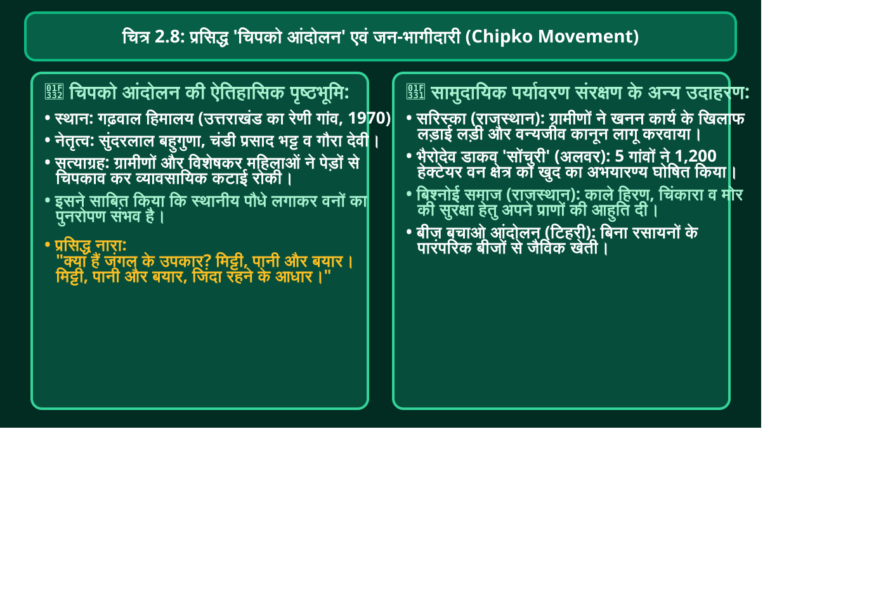
• उत्तराखंड के गढ़वाल हिमालय में सुंदरलाल बहुगुणा, चंडी प्रसाद भट्ट व गौरा देवी के नेतृत्व में ग्रामीणों द्वारा पेड़ों से चिपककर कटाई रोकने का ऐतिहासिक आंदोलन।
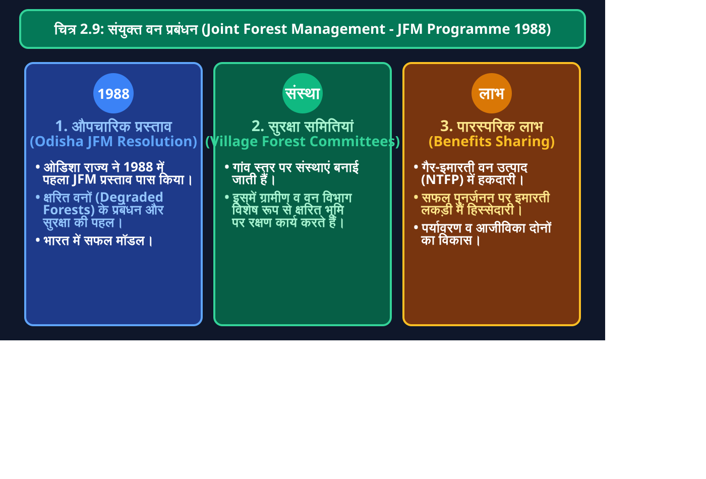
• 1988 में ओडिशा से शुरू हुआ JFM मॉडल, जिसमें ग्राम सुरक्षा समितियां (Village Forest Protection Committees) वन विभाग के साथ मिलकर वनों की सुरक्षा करती हैं।
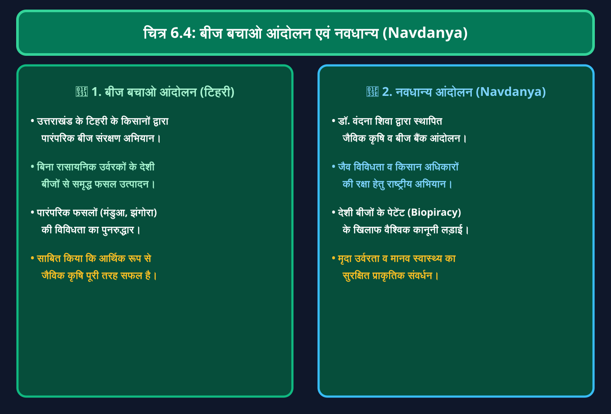
• टिहरी का 'बीज बचाओ आंदोलन' एवं वंदना शिवा का 'नवधान्य' - बिना रासायनिक उर्वरकों के पारंपरिक बीजों द्वारा विविध व सफल जैविक खेती का मॉडल।
• अछूता पवित्र वन क्षेत्र जिसे स्थानीय जनजातीय समुदायों द्वारा देवी-देवताओं को समर्पित कर पूरी तरह संरक्षित रखा जाता है।
• छोटानागपुर की मुंडा व संताल जनजातियां महुआ और कदंब की पूजा करती हैं, जबकि ओडिशा व बिहार की जनजातियां शादी में आम व इमली की पूजा करती हैं।

• राजस्थान के अलवर जिले के 5 गांवों के लोगों ने 1,200 हेक्टेयर वन भूमि को 'भैरोदेव डाकव सोंचुरी' घोषित कर खुद का अभयारण्य बनाया है जहाँ शिकार वर्जित है।
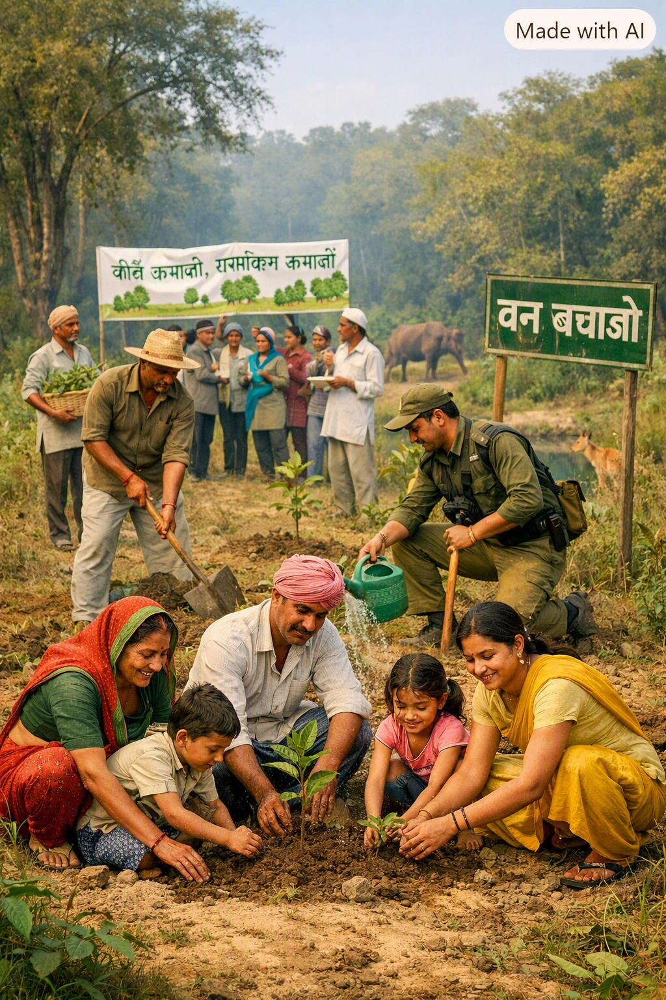
• स्थानीय ग्रामीणों तथा महिलाओं द्वारा बंजर व क्षरित वन भूमि पर नए पौधे लगाना और वन संरक्षण का संकल्प लेना।
• NCERT मुख्य निष्कर्ष: पर्यावरण और वन्यजीवों का सतत संरक्षण स्थानीय समुदायों की सक्रिय सहभागिता के बिना संभव नहीं है।
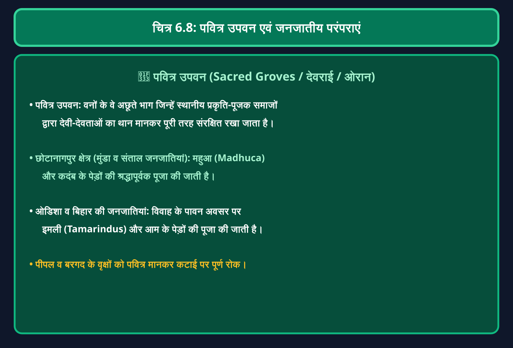
• मुंडा, संताल, खड़िया व ओरॉंव जनजातियों की महुआ, कदंब, पीपल व इमली के पेड़ों की पूजा परंपराएं।
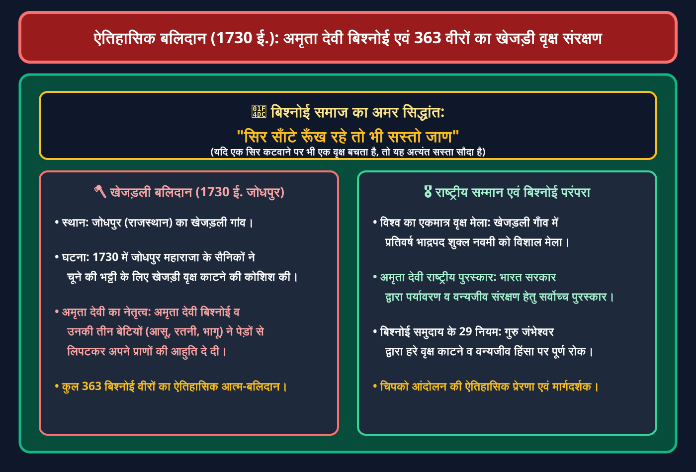
• वर्ष 1730 में राजस्थान के जोधपुर जिले के खेजड़ली गांव में अमृता देवी बिश्नोई तथा उनकी तीन बेटियों ने खेजड़ी वृक्षों की कटाई रोकने के लिए पेड़ों से चिपककर अपने प्राणों की आहुति दे दी।
• अमृता देवी की प्रेरणा से 363 बिश्नोई पुरुषों और महिलाओं ने पेड़ों की रक्षा करते हुए सर्वोच्च बलिदान दिया।
• बिश्नोई सिद्धांत: "सिर साँटे रूँख रहे तो भी सस्तो जाण" (यदि सिर कटवाने पर भी एक वृक्ष बचता है, तो यह बहुत सस्ता सौदा है)।
• भारत सरकार पर्यावरण व वन्यजीव संरक्षण हेतु सर्वोच्च 'अमृता देवी बिश्नोई राष्ट्रीय पुरस्कार' प्रदान करती है।
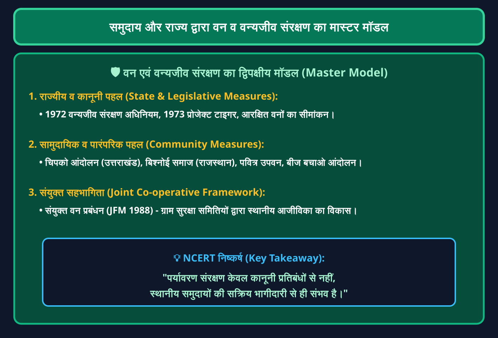
• राज्यीय कानून (1972 अधिनियम व 1973 प्रोजेक्ट टाइगर) तथा स्थानीय सामुदायिक सहभागिता (चिपको, JFM, सोंचुरी) का द्विपक्षीय संरक्षण मॉडल।
| क्र.सं. | विषय / आंदोलन | मुख्य क्षेत्र / वर्ष | मुख्य विशेषता / परीक्षा बिंदु |
|---|---|---|---|
| 1 | 1972 अधिनियम | भारत सरकार (1972) | संरक्षित प्रजातियों की सूची तथा शिकार पर राष्ट्रीय प्रतिबंध। |
| 2 | प्रोजेक्ट टाइगर | 1973 (भारत भर में) | बाघों को लुप्त होने से बचाने हेतु (कॉर्बेट, सुंदरवन, सरिस्का आदि)। |
| 3 | प्रोजेक्ट चीता | सितंबर 2022 (कुनो M.P.) | 1952 में लुप्त चीतों का नामीबिया/दक्षिण अफ्रीका से पुनर्वास। |
| 4 | चिपको आंदोलन | गढ़वाल हिमालय (1970) | सुंदरलाल बहुगुणा व गौरा देवी द्वारा पेड़ों से चिपककर रक्षण। |
| 5 | JFM प्रबंधन | ओडिशा (1988) | क्षरित वनों की सुरक्षा हेतु ग्राम सुरक्षा समितियों का गठन। |
| 6 | भैरोदेव सोंचुरी | अलवर (राजस्थान) | 5 गांवों द्वारा 1,200 हेक्टेयर वन को निजी अभयारण्य घोषित। |
| 7 | बीज बचाओ आंदोलन | टिहरी (उत्तराखंड) | बिना रसायनों के पारंपरिक बीजों द्वारा जैविक कृषि। |